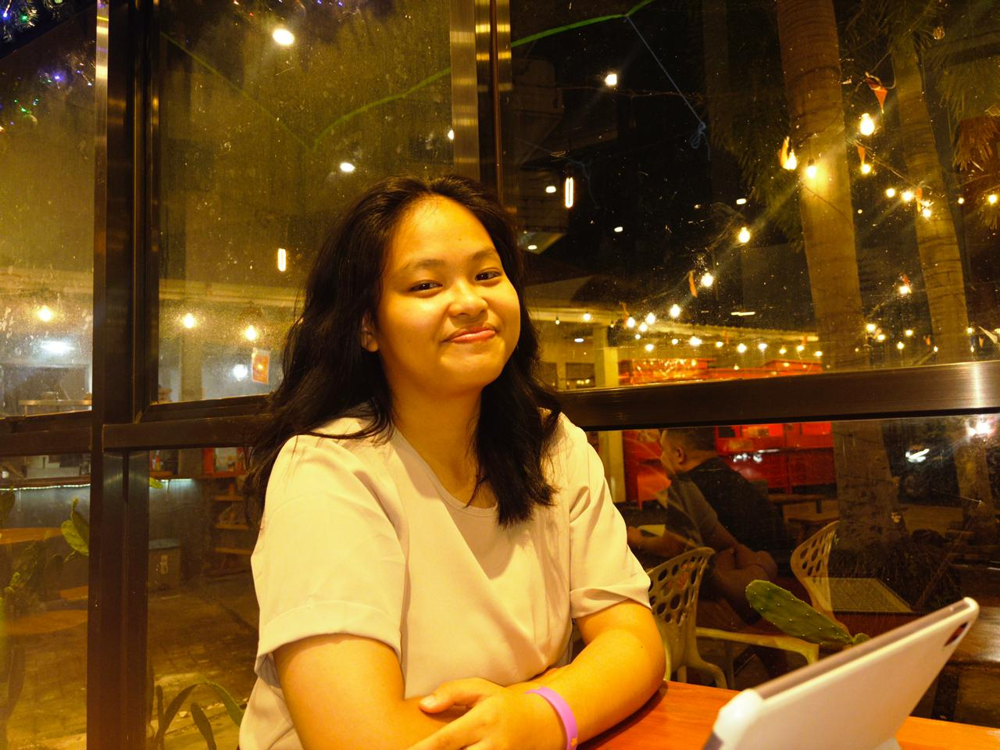
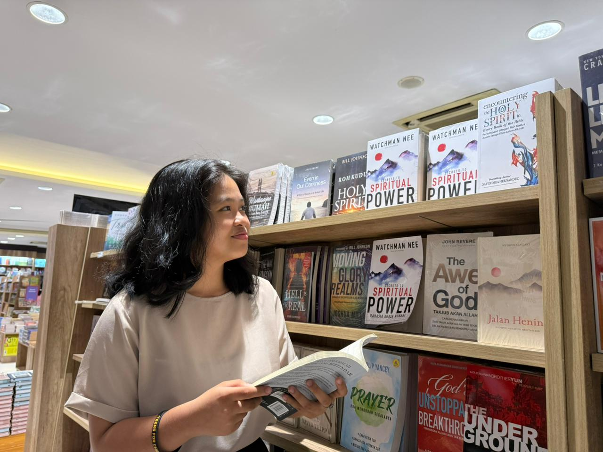

PREYSLI MAKALEW
Informatics Engineering Student | Critical Thinking, Adaptive Leadership & Public Engagement
{kind=link}

Preysli
Candy
Injili
Makalew
Informatics Engineering Student
I am an Informatics Engineering student driven by a passion for technology, structured problem-solving, and meaningful public impact. I combine a strong technical foundation with a strategic mindset to build solutions that bridge the gap between complex technology and human-centered design.
Throughout my academic journey, I have maintained a strong dedication to academic excellence while being actively involved in church activities and community service, which taught me the core values of servant leadership and empathy. Additionally, I have been entrusted with evaluating, analyzing, and providing critical assessments in science and research, complemented by my background in sports. Together, these experiences continuously shape my adaptive leadership, critical thinking, and public engagement. I am constantly exploring new technologies, eager to contribute to innovative tech projects, and open to collaboration.
Let’s connect and build something impactful together!